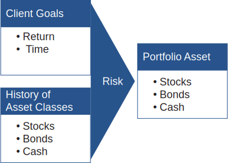

Asset allocation is the process for structuring a portfolio and managing it relative to the client’s objectives. There are two general approaches to asset allocation: Strategic Asset Allocation and Tactical Asset Allocation
Strategic Asset Allocation applies a long-term perspective to define how a portfolio should be diversified across asset classes. In this process, portfolios are not traded frequently, but are simply rebalanced periodically to maintain the desired asset allocation that is most likely to reach the longer-term objectives of the client. The chart below helps describe the process of strategic asset allocation.
Click each box to learn more.
Strategic Asset Allocation
